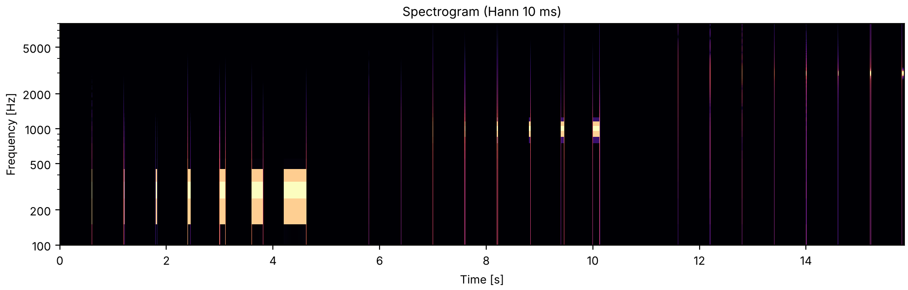

Tone bursts from one period to 128
Listen for the moment a click turns into a tone. Each of the three series plays bursts of one tone lasting 1, 2, 4 and on up to 128 periods: first at 300 Hz, then 1000 Hz, then 3000 Hz. The booklet asks how many periods it takes to establish a sense of pitch, and describes the shortest bursts as clicks that take on a pitch as they lengthen.
Houtsma, Rossing & Wagenaars, Demonstration 13, after Doughty & Garner (1948). Bursts of 1, 2, 4, 8, 16, 32, 64 and 128 periods of 300, 1000 and 3000 Hz, as in the booklet, each starting and ending at a zero crossing of a sine with no ramps. Ours: the bursts start 0.6 s apart, with 1 s between the series, which are played once where the disc plays them twice.
pk1_tone_bursts_from_one_period_to_128.flac, 15.8 s, mono

Code
events, start = [], 0.0
for freq in (300, 1000, 3000):
for k, periods in enumerate(2 ** np.arange(8)):
burst = so.pure_tone(periods / freq, FS, freq, phase=-np.pi / 2)
events.append((start + 0.6 * k, burst))
start += 0.6 * 8 + 1.0
sound = finish(place(events))
fig, playhead = show(sound, fmin=100, fmax=8000, win=10e-3, title="Spectrogram (Hann 10 ms)")